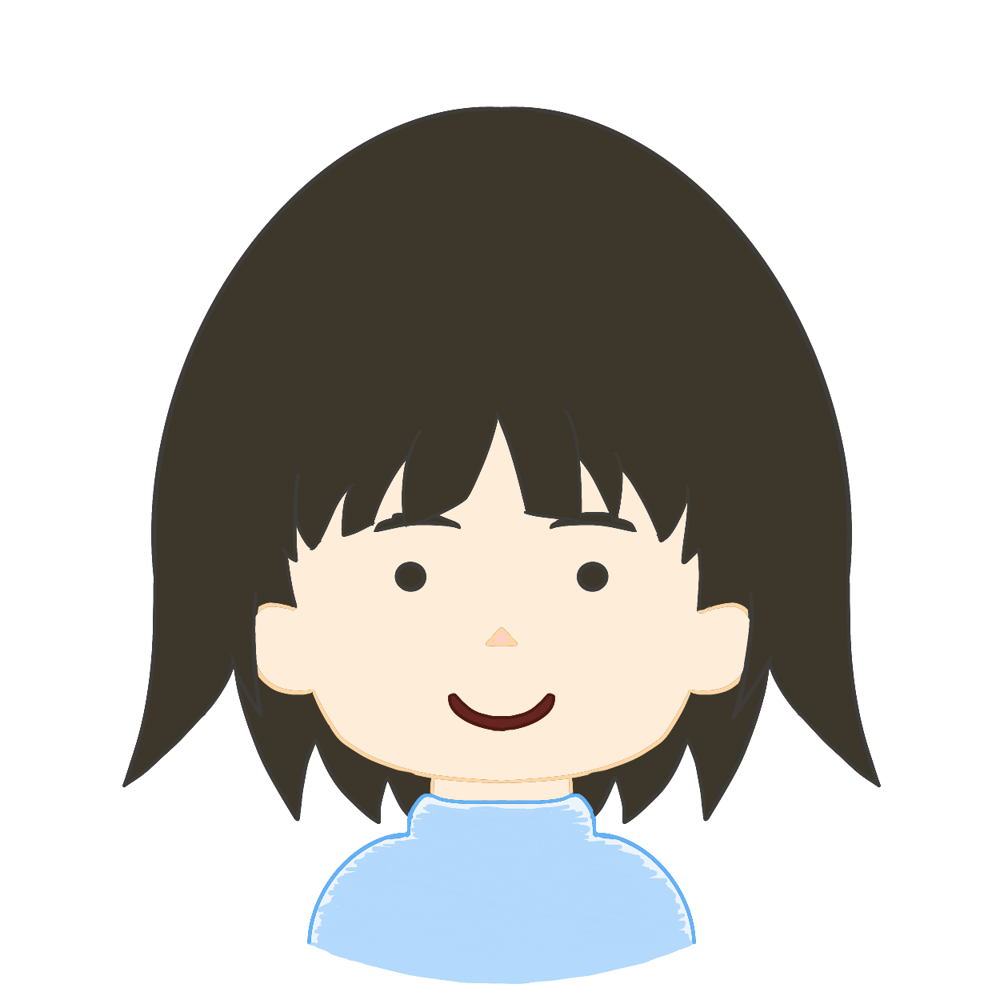

向井と申します。Unityでゲーム開発をしたりイラストを描いたりしています。
プログラミングは数年前から独学で学んできておりオンライン講座で勉強したりもしてました。
その後職業訓練でプログラミングを教わり現在も勉強中です。
本格的にプログラミングを始めたのは大学卒業して1年後で、それまではネットに公開されているコードをコピペしたり
授業でWebページを作成したり参考書のゲームを作成したりしていました。
オンラインでのプログラミングスクールでUnityを本格的に学び始めそれから職業訓練でJava,JavaScriptなど
さらに多くのプログラミングを学びました。
特異な言語はC#です。